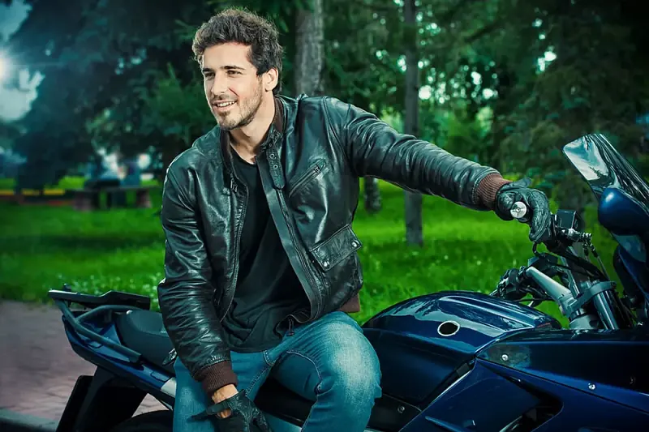
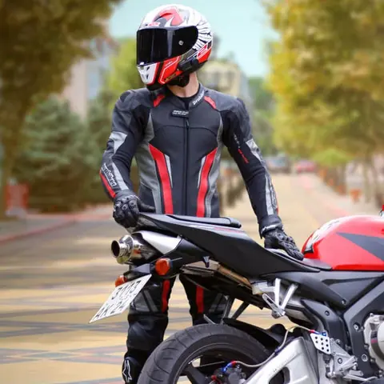

Parte superiore
Giacche
Tessuto e pelle, capi estivi, invernali e per la mezza stagione.
Esplora giaccheIntere e divisibili, da provare per la guida sportiva.

Il reparto presenta tute in pelle intere e a due pezzi. La prova serve a valutare come il capo si adatta alla tua posizione di guida.
Chiedi di tutePer modelli, taglie e disponibilità, chiedi al negozio o passa in Via Trino 200.